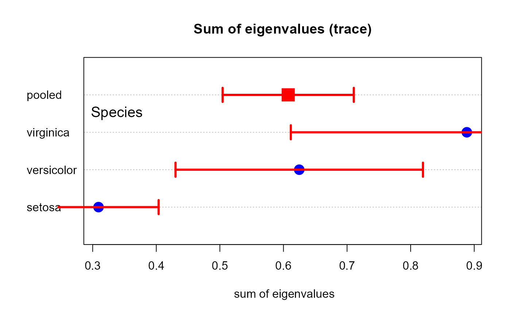

This function uses asymptotic results from random matrix theory to calculate approximate, normal theory confidence intervals for the trace (sum of eigenvalues) of one or more sample covariance matrices.
The trace of a covariance matrix equals the sum of its eigenvalues, which represents the total variance in the system. For large samples, the trace follows an approximate normal distribution with variance that can be calculated from the eigenvalue structure.
Value
A data frame with one row for each covariance matrix. Columns:
- trace
The trace (sum of eigenvalues) of the covariance matrix
- se
Standard error of the trace
- lower
Lower confidence limit
- upper
Upper confidence limit
Details
The confidence interval is based on the asymptotic normality of the trace: $$ trace(\widehat{\Sigma}) \pm z_{1 - \alpha/2} \times SE $$ where \(\widehat{\Sigma}\) is the sample covariance matrix and \(SE\) is the standard error.
The variance of the trace is calculated using the formula from Bai & Silverstein (2004): $$ Var(trace) = \frac{2}{n} \sum_{i=1}^{p} \lambda_i^2 = \frac{2}{n} trace(\Sigma^2) $$ where \(\lambda_i\) are the eigenvalues of \(\Sigma\).
This is a simplified version of the general CLT for linear spectral statistics. For i.i.d. components with finite fourth moments, the trace is asymptotically normal with this variance.
Asymptotic regime: The theory applies when both sample size \(n\) and dimension \(p\) can grow, typically requiring \(n >> p\) for good finite-sample performance. The approximation improves as the sample size increases.
Comparison with bootstrap: For small to moderate samples, bootstrap
confidence intervals (see eigstatCI()) may provide better coverage.
This asymptotic approach is faster but may be anticonservative (too narrow)
when \(n\) is small relative to \(p\).
References
Bai, Z. D., & Silverstein, J. W. (2004). CLT for linear spectral statistics of large-dimensional sample covariance matrices. Annals of Probability, 32(1A), 553-605. doi:10.1214/aop/1078415845
Anderson, T. W. (2003). An Introduction to Multivariate Statistical Analysis (3rd ed.). Wiley-Interscience.
Examples
# Iris data example
data(iris)
iris.mod <- lm(as.matrix(iris[,1:4]) ~ iris$Species)
iris.boxm <- boxM(iris.mod)
# Get covariance matrices
cov <- c(iris.boxm$cov, list(pooled = iris.boxm$pooled))
n <- c(rep(50, 3), 150)
# Calculate trace CIs
CI <- traceCI(cov, n = n, conf = 0.95)
CI
#> trace se lower upper
#> setosa 0.3092041 0.04819707 0.2147396 0.4036686
#> versicolor 0.6248245 0.09926867 0.4302615 0.8193875
#> virginica 0.8883673 0.14122909 0.6115634 1.1651713
#> pooled 0.6074653 0.05262981 0.5043128 0.7106178
# Compare with plot
plot(iris.boxm, which = "sum", gplabel = "Species",
main = "Sum of eigenvalues (trace)")
arrows(CI$lower, 1:4, CI$upper, 1:4,
lwd = 3, angle = 90, length = 0.1, code = 3, col = "red")

# Single covariance matrix
S <- cov(iris[,1:4])
traceCI(S, n = 150)
#> trace se lower upper
#> 1 4.572957 0.4891299 3.61428 5.531634
# Compare different confidence levels
traceCI(cov, n = n, conf = 0.90)
#> trace se lower upper
#> setosa 0.3092041 0.04819707 0.2299270 0.3884812
#> versicolor 0.6248245 0.09926867 0.4615421 0.7881069
#> virginica 0.8883673 0.14122909 0.6560662 1.1206685
#> pooled 0.6074653 0.05262981 0.5208970 0.6940336
traceCI(cov, n = n, conf = 0.95)
#> trace se lower upper
#> setosa 0.3092041 0.04819707 0.2147396 0.4036686
#> versicolor 0.6248245 0.09926867 0.4302615 0.8193875
#> virginica 0.8883673 0.14122909 0.6115634 1.1651713
#> pooled 0.6074653 0.05262981 0.5043128 0.7106178
traceCI(cov, n = n, conf = 0.99)
#> trace se lower upper
#> setosa 0.3092041 0.04819707 0.1850567 0.4333515
#> versicolor 0.6248245 0.09926867 0.3691253 0.8805236
#> virginica 0.8883673 0.14122909 0.5245853 1.2521494
#> pooled 0.6074653 0.05262981 0.4718999 0.7430307